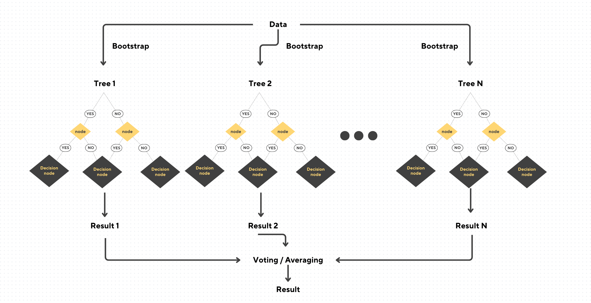

Random Forest is one of the most popular and versatile machine learning algorithms that can be used for any supervised learning tasks. It is a learning technique that involves creating many decision trees and combining their output to improve reliability and reduce overfitting. Many weak decision trees can come up with a smarter and more accurate decision because it is less likely that the majority of the trees are making the same error. Random Forest is so popular because it is suitable for both classification and regression tasks due to its high ability to generalize. It also has high efficiency and simplicity because it is composed of many decision trees and decision trees is one of the simplest algorithm that exists. In this blog, we’ll first understand why we care this algorithm and explore what makes it so powerful. Also, we will dive into its mechanics, and demonstrate its implementation with code. By the end, you’ll have a clear understanding of the algorithm and the confidence to use it in your own projects.
Why Care About Random Forest? Use Cases and Relevance
Random Forest algorithm is commonly used in various fields, including finance, healthcare, marketing, and more. It is one of the few algorithms that can handle both classification and regression tasks. This versatility is preferred for many projects and scenarios. Some example use cases:
Healthcare: Predicting patient outcomes based on medical records.
Finance: Credit scoring and fraud detection.
Marketing: Customer segmentation and churn prediction.
Environment: Forecasting weather patterns or analyzing deforestation.
The Random Forest algorithm is very robust to noise and overfitting. However, it is not very interpretable because it contains a lot of randomness to diversify the errors each decision tree makes. Therefore, it is more commonly used where interpretability is not the primary concern.
Revisiting Key Concepts: Bootstrapping and Decision Trees
To fully understand Random Forest, it’s essential to have a good understanding on the following concepts:
Bootstrapping: It is a statistical technique used to create multiple subsets of a dataset by randomly sampling with replacement. Each subset, known as a bootstrap sample, is the same size as the original dataset but may contain duplicate records due to the replacement. This method allows algorithms like Random Forest to train multiple decision trees on varied datasets.
Decision Trees: A decision tree makes predictions or decisions by following a specific path baed on the input data. Each internal node represents a test on a feature (e.g., “Is age > 30?”), each branch represents the outcome of the test, and each leaf node represents a final decision or prediction. Decision trees are intuitive and easy to visualize, so they are useful for understanding the decision-making process. However, they can be prone to overfitting, especially when the tree grows too complex by splitting excessively.
The Mechanics of Random Forest
Random Forest combines the predictions of multiple decision trees to improve accuracy and reduce overfitting. Here’s how it works step-by-step aslo shown in Figure 1 below:
Bootstrap Sampling:
Random subsets of the training data are created using bootstrapping.
Each subset is used to train an individual decision tree.
Feature Randomness:
At each split in a tree, only a random subset of features is considered.
This reduces correlation between trees and increases diversity.
Aggregation:
For classification tasks, the final prediction is based on majority voting.
For regression tasks, the output is the average of the predictions.

Figure 1: Structure of the Random Forest algorithm
The reason Random Forest works well is that it handles each tree to add diversity to the data, features, and error each tree sees. Each tree is trained on a different subset of the data, done by bootstrap sampling. Tree learns different patterns and types of errors. Randomness in feature adds variation by simply restricting split to a random subset of features. This helps trees concentrate on less common aspects of the data, and learn different kinds of error. Key to it is the diversity in errors. Because each tree makes different mistakes, the forest takes care to not fall back into the same errors. When combined these differences are canceled out and greater accuracy is achieved. Together, the trees smooth out individual errors, and capture reliable patterns. Thus, Random forest is less likely to overfit and more robust because of this.
Implementation: Random Forest vs. Decision Tree
Let’s see Random Forest in action and compare it to a single decision tree using Python. We’ll use the scikit-learn library for this demonstration.
Code Example
import numpy as npfrom sklearn.datasets import make_classificationfrom sklearn.model_selection import train_test_splitfrom sklearn.tree import DecisionTreeClassifierfrom sklearn.ensemble import RandomForestClassifierfrom sklearn.metrics import accuracy_score# Generate a synthetic dataset with noiseX, y = make_classification( n_samples=1000, n_features=20, n_informative=10, n_redundant=5, flip_y=0.1, random_state=42)# Split into training and testing setsX_train, X_test, y_train, y_test = train_test_split(X, y, test_size=0.3, random_state=42)# Train a Decision Treetree_model = DecisionTreeClassifier(random_state=42)tree_model.fit(X_train, y_train)tree_preds = tree_model.predict(X_test)tree_accuracy = accuracy_score(y_test, tree_preds)# Train a Random Forestforest_model = RandomForestClassifier(n_estimators=100, random_state=42)forest_model.fit(X_train, y_train)forest_preds = forest_model.predict(X_test)forest_accuracy = accuracy_score(y_test, forest_preds)# Print the resultsprint(f"Decision Tree Accuracy: {tree_accuracy:.2f}")print(f"Random Forest Accuracy: {forest_accuracy:.2f}")
Decision Tree Accuracy: 0.72
Random Forest Accuracy: 0.87
Advantages of Random Forest
Versatility: Random Forest is flexible and can handle both classification and regression tasks effectively. It is particularly good for structured, tabular data with non-linear or complex patterns.
Robustness: Its ensemble approach makes it resistant to overfitting by averaging or voting across multiple trees. It also handles datasets with missing values or outliers gracefully, as individual decision trees adapt to the data they encounter.
Feature Importance: Random Forest provides a ranking of feature importance, helping users identify which features contribute the most to predictions.
Parallelization: Since each tree in the forest is built independently, training can be parallelized. It is more efficient on modern multi-core processors.
Challenges and Limitations
Interpretability: Individual decision trees are straightforward to understand but they are very randomized in the Random Forest algorithm. Random Forest also combines them, making it even harder to interpret as a whole. This reduces its transparency and makes it more like a “black box.”
Computational Cost: Training multiple trees can be computationally expensive, especially for large datasets with many features. Trees are also often very deep in Random Forest as each tree should make reasonable predictions. Memory usage can also be a concern when scaling to very large forests.
Overfitting with Large Forests: Although Random Forest is designed to reduce overfitting, models that are overly complex can still overfit, with little improvement in accuracy while increasing computational costs.
Bias in Imbalanced Data: Random Forest can struggle with imbalanced datasets. In such cases, the algorithm might favor the majority class, leading to biased predictions. This is only solvable with additional techniques, such as class weighting or resampling.
Conclusion
Random Forest is very popular in data science because of its simplicity and performance. It also works well for both classification and regression which is an uncommon feature amongst machine learning algorithms. In this blog, we explored its mechanisms, provided a coding example, and highlighted its strengths and weaknesses. By combining the outputs of multiple decision trees, Random Forest reduces overfitting. However, it is less suitable for tasks where interpretability or resource efficiency is critical due to its complexity and computational cost. Whether you’re a beginner or a seasoned practitioner, Random Forest is a reliable choice for many machine learning problems. Try implementing it in your next project and experience its benefits firsthand!
Thank you for reading! I hope you had some takeaways after reading this blog. Personally, working on this blog allowed me to explore the inner workings of Random Forest and comparing it to decision trees. This deepened my understanding of ensemble methods and their practical applications. Feel free to reach out if you’d like to discuss the Random Forest algorithm, or anything related to machine learning and data science. I’d love to connect and exchange ideas!